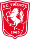
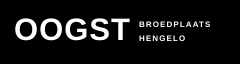
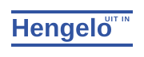

Uit Vandaag Twente is een persoonlijke, onafhankelijke planningsagenda. Ronald Punt gebruikt hem om favoriete concerten, evenementen en FC Twente-wedstrijden naast elkaar te zien — en zo niet per ongeluk twee afspraken op hetzelfde moment te maken. Vrienden en kennissen mogen de agenda gebruiken als zij hem handig vinden.
Redactionele scope
De selectie richt zich op Ronalds favoriete plekken in Hengelo, Almelo en Enschede en op wedstrijden van FC Twente. Het is bewust geen compleet overzicht van alle theaters, bioscopen, festivals en podia in Twente.
Evenementen van bamfestival.nl zijn nog niet opgenomen en worden later toegevoegd.
Metropool, De Cactus, Oogst, FC Twente en Uit in Hengelo worden bij het starten en daarna iedere zes uur opgehaald. Evenementen met dezelfde genormaliseerde naam en aanvang worden samengevoegd; een bekende locatie helpt om dezelfde gebeurtenis ook bij kleine tijdverschillen te herkennen. Laatste succesvolle verwerking van alle bronnen: donderdag 6 augustus 2026 om 09:48.
Bronnen en tickets
De agenda verzamelt publiek beschikbare informatie van onderstaande organisaties. Controleer voor tijden, beschikbaarheid, toegang en tickets altijd de oorspronkelijke aanbieder.
- Metropool
- De Cactus

FC Twente
Oogst
Uit in Hengelo- Rijksoverheid — officiële feestdagen
Webscraping en juistheid
Deze website gebruikt webscraping om openbare agenda-informatie te verzamelen. Gegevens kunnen onvolledig, vertraagd of gewijzigd zijn. Uit Vandaag Twente geeft geen garantie op de juistheid, volledigheid of beschikbaarheid van de informatie en is niet verantwoordelijk voor wijzigingen, afgelaste evenementen, ticketverkoop of externe websites.
Privacy en Matomo
Uit Vandaag Twente gebruikt de zelf beheerde Matomo-installatie op matomo.puntuale.nl (site-ID 15) om te begrijpen welke pagina’s en links worden gebruikt. Matomo wordt pas geladen nadat een bezoeker daar uitdrukkelijk toestemming voor geeft. Zonder toestemming gaan er geen analyticsgegevens naar Matomo en worden er geen analytische cookies geplaatst.
Na toestemming verwerkt Matomo onder meer de bezochte pagina, het tijdstip, de verwijzende pagina en technische browser- en apparaatgegevens. De server ontvangt daarbij ook het IP-adres dat nodig is om de verbinding af te handelen. Er worden geen advertentienetwerken, gebruikers-ID’s, heatmaps of sessie-opnamen gebruikt.
Matomo kan first-party cookies plaatsen, waaronder _pk_id voor het herkennen van een terugkerend bezoek (standaard maximaal 13 maanden), _pk_ses voor de huidige sessie (standaard 30 minuten) en _pk_ref voor herkomstinformatie (standaard maximaal 6 maanden). De keuze zelf wordt als noodzakelijke privacyvoorkeur in de lokale browseropslag bewaard.
Toestemming is vrijwillig en kan altijd worden gewijzigd via . Bij intrekken worden bekende Matomo-cookies verwijderd en wordt Matomo bij volgende bezoeken niet geladen. Gebruik voor vragen of een privacyverzoek de ideeënbus.
AI
Deze website is ontwikkeld met hulp van AI, waaronder OpenAI Codex. AI is gebruikt als hulpmiddel bij ontwerp en ontwikkeling; de agenda-informatie zelf komt uit de hierboven genoemde openbare bronnen.
Persoonlijk en onafhankelijk
Ronald Punt is al jarenlang vrijwilliger bij Metropool, BAM! Festival en Oogst. Hij maakt deze agenda op persoonlijke titel: de website is geen officiële publicatie van, wordt niet gesponsord door en spreekt niet namens deze of andere genoemde organisaties. Merknamen en logo’s blijven eigendom van hun respectieve rechthebbenden en worden uitsluitend gebruikt ter bronvermelding.
Gebruik op eigen risico
Gebruik deze agenda als inspiratie en controleer altijd de originele evenementpagina. Door de website te gebruiken, doe je dat op eigen risico.